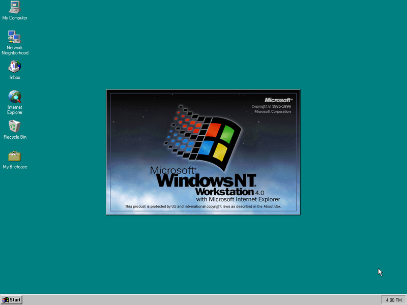
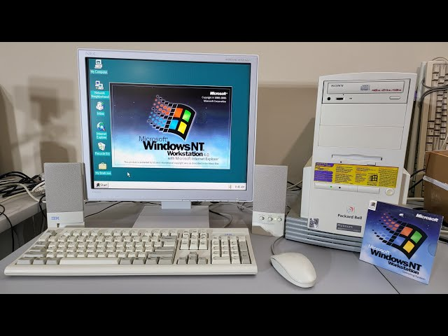

Windows NT 4.0, випущена в 1996 році, була однією з ключових версій операційної системи Microsoft
Windows. Ця версія була спрямована на корпоративний сектор і бізнес-клієнтів, які шукали стабільну
та потужну операційну систему для великих мереж та серверів.
Windows NT 4.0 базувалася на ядрі Windows NT, яке було розроблене Microsoft як альтернатива для
споживчої версії Windows, що базувалася на MS-DOS. Одним з ключових переваг Windows NT була її
стабільність та надійність. Вона була спроектована для роботи в навантажених корпоративних
середовищах, де надійність та продуктивність були важливими.
Однією з особливостей Windows NT 4.0 було впровадження багатокористувацькості та підтримка мережевих
можливостей. Ця операційна система дозволяла одночасно багатьом користувачам працювати на сервері чи
в мережі, обслуговуючи їх запити та надаючи доступ до спільних ресурсів.
Крім того, Windows NT 4.0 включала підтримку нових технологій та апаратних засобів, таких як USB та
Plug and Play, що робило її більш сумісною з сучасним обладнанням.
Загалом, Windows NT 4.0 була важливим випуском для корпоративного сектору, де вона стала популярною
серед організацій та підприємств завдяки своїй стабільності, продуктивності та розширеним
можливостям мережевого обслуговування.
2. ІНТЕРФЕЙС
Інтерфейс Windows NT 4.0 відрізнявся від інших версій Windows того часу, таких як Windows 95 і
Windows 98, оскільки ця операційна система була спрямована на корпоративний сектор. Тому він мав
більше консервативний і професійний вигляд.
Основні елементи інтерфейсу Windows NT 4.0 були досить схожі з іншими версіями Windows того часу.
Вони включали в себе робочий стіл з піктограмами програм і файлів, панель завдань, де можна було
переглядати відкриті вікна та запущені програми, а також Меню Пуск для доступу до програм та
системних налаштувань.
Проте інтерфейс Windows NT 4.0 мав певні відмінності. Він був менш кольоровим та мав більше
професійного вигляду, що відображало його спрямування на корпоративний сектор. Також Windows NT 4.0
мав деякі різниці в налаштуваннях і управлінні, оскільки був спроектований для використання у
великих мережах і на серверах.
У плані функціональності та продуктивності, інтерфейс Windows NT 4.0 був досить схожим з іншими
версіями Windows, проте його дизайн був дещо більш обмеженим та менш розкішним з огляду на його
спрямування на корпоративні цілі.

Інтерфейс Windows NT 4.0

Компютор з Windows NT 4.0
3. Думка користувачів
Думки користувачів про Windows 1.0 в 1985 році були досить різними, оскільки це була перша спроба
Microsoft створити графічний інтерфейс для широкого кола користувачів. Деякі користувачі оцінювали
нові можливості, які надавала Windows 1.0, такі як графічне середовище роботи з вікнами та програми,
які спрощували створення документів та малюнків.
Однак інші користувачі могли відчувати себе обмеженими через обмежену функціональність та
нестабільність операційної системи. Windows 1.0 не підтримувала багатозадачність, мережеві функції
та інші зручності, які ми звикли бачити в сучасних операційних системах.
Деякі користувачі були вражені інноваційністю Windows 1.0, водночас інші вважали
його обмеженим і недостатньо стабільним для повсякденного використання, на відміну від конкурентів
того часу. В будь-якому випадку,
Windows 1.0 відкрив двері для майбутнього розвитку операційних систем, і відгуки користувачів
відіграли важливу роль у формуванні подальшого напрямку розвитку Microsoft Windows.